European News Dashboard
Daily view
Last update: 27 Oct 2026, 20:15 CET
🇮🇹 Italy — 27 Oct 2026
Updated: 27 Oct 2026, 20:15 CETWordcloud
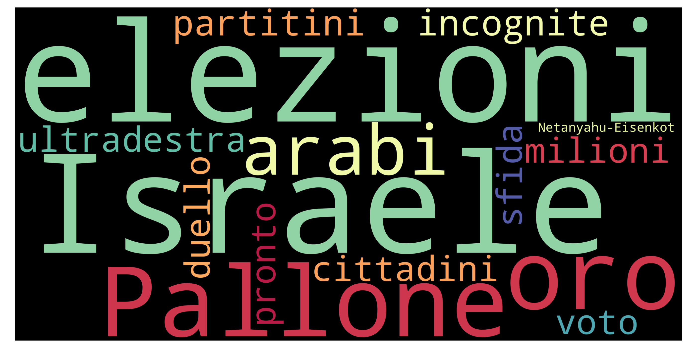
Top 10 unigrams
| Term | Frequency |
|---|---|
| israele | 12 |
| elezione | 7 |
| brasile | 6 |
| putin | 5 |
| midterm | 4 |
| aperto | 4 |
| seggio | 4 |
| affluenza | 4 |
| trump | 4 |
| bolsonaro | 4 |
Top 10 phrases
| Term | Frequency |
|---|---|
| youssef siher | 2 |
| campo largo | 2 |
| ordine sparso | 2 |
| palazzo chigi | 2 |
Top 10 new terms (not present on previous day)
| Term | Current day frequency |
|---|---|
| putin | 5 |
| seggio | 4 |
| affluenza | 4 |
| aperto | 4 |
| pensione | 3 |
| conte | 3 |
| stubb | 3 |
| punto | 3 |
| rappresentanza | 2 |
| regola | 2 |
Top 10 increasing terms (vs previous day)
| Term | Difference | Current day frequency | Previous day frequency |
|---|---|---|---|
| israele | 4 | 12 | 8 |
| elezione | 2 | 7 | 5 |
| midterm | 1 | 4 | 3 |
| paese | 1 | 2 | 1 |
| partito | 1 | 2 | 1 |
| democratico | 1 | 2 | 1 |
| bettini | 1 | 2 | 1 |
| futuro | 1 | 2 | 1 |
| manovra | 1 | 2 | 1 |
| record | 1 | 2 | 1 |
Top 10 decreasing terms (vs previous day)
| Term | Difference | Current day frequency | Previous day frequency |
|---|---|---|---|
| lula | -11 | 2 | 13 |
| trump | -10 | 4 | 14 |
| netanyahu | -6 | 2 | 8 |
| presidente | -4 | 2 | 6 |
| studente | -4 | 1 | 5 |
| brasile | -3 | 6 | 9 |
| voto | -3 | 3 | 6 |
| usa | -2 | 2 | 4 |
| ucraina | -2 | 4 | 6 |
| sfida | -2 | 2 | 4 |
🇬🇧 UK — 27 Oct 2026
Updated: 27 Oct 2026, 20:15 CETWordcloud
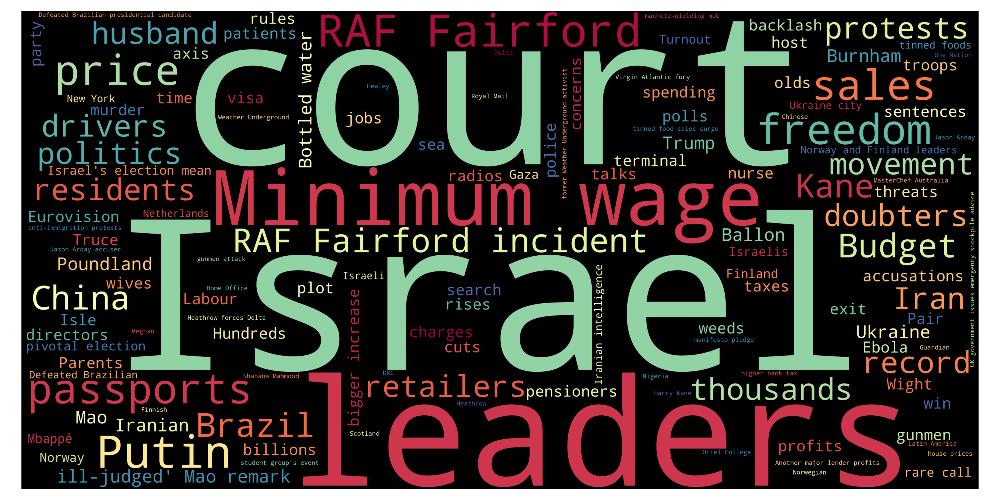
Top 10 unigrams
| Term | Frequency |
|---|---|
| police | 6 |
| israel | 6 |
| brazil | 6 |
| leader | 5 |
| putin | 5 |
| budget | 5 |
| price | 4 |
| china | 4 |
| nigeria | 4 |
| trump | 4 |
Top 10 phrases
| Term | Frequency |
|---|---|
| minimum wage | 5 |
| russell brand | 5 |
| ill judged mao remark | 3 |
| bottled water | 3 |
| bigger increase | 2 |
| israel election mean | 2 |
| raf fairford | 2 |
| rare call | 2 |
| norway finland leaders | 2 |
| ukraine city | 2 |
Top 10 new terms (not present on previous day)
| Term | Current day frequency |
|---|---|
| police | 6 |
| putin | 5 |
| minimum wage | 5 |
| chancellor | 3 |
| resident | 3 |
| mao | 3 |
| thousand | 3 |
| sale | 3 |
| protest | 3 |
| passport | 3 |
Top 10 increasing terms (vs previous day)
| Term | Difference | Current day frequency | Previous day frequency |
|---|---|---|---|
| israel | 4 | 6 | 2 |
| rise | 2 | 3 | 1 |
| nigeria | 2 | 4 | 2 |
| price | 2 | 4 | 2 |
| russell brand | 2 | 5 | 3 |
| time | 1 | 2 | 1 |
| talk | 1 | 2 | 1 |
| cell | 1 | 2 | 1 |
| backlash | 1 | 2 | 1 |
| concern | 1 | 2 | 1 |
Top 10 decreasing terms (vs previous day)
| Term | Difference | Current day frequency | Previous day frequency |
|---|---|---|---|
| brazil | -5 | 6 | 11 |
| poll | -5 | 1 | 6 |
| november | -4 | 2 | 6 |
| murder | -4 | 1 | 5 |
| wind | -4 | 1 | 5 |
| sanction | -3 | 1 | 4 |
| mother | -3 | 1 | 4 |
| ballon | -3 | 2 | 5 |
| trial | -2 | 2 | 4 |
| london | -2 | 3 | 5 |
🇮🇹 Italy — 26 Oct 2026
Updated: 27 Oct 2026, 20:15 CETWordcloud
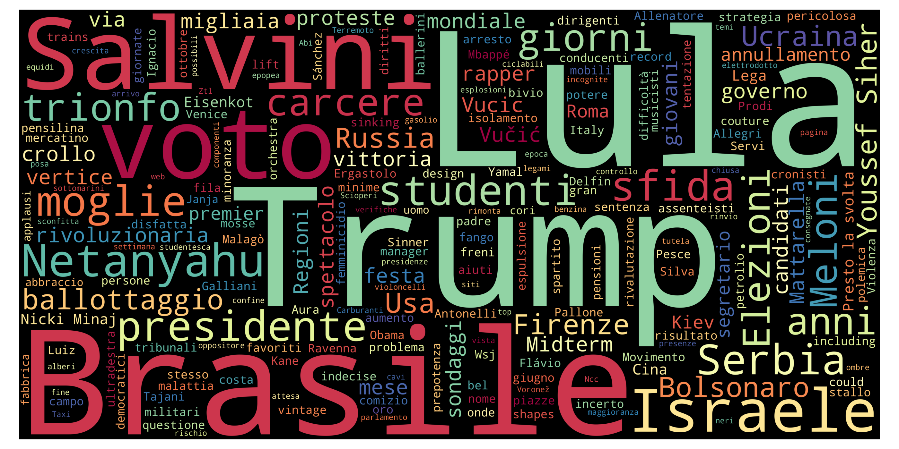
Top 10 unigrams
| Term | Frequency |
|---|---|
| trump | 14 |
| lula | 13 |
| brasile | 9 |
| netanyahu | 8 |
| israele | 8 |
| voto | 6 |
| presidente | 6 |
| ucraina | 6 |
| studente | 5 |
| elezione | 5 |
Top 10 phrases
| Term | Frequency |
|---|---|
| youssef siher | 3 |
| ex ilva | 2 |
| nicki minaj | 2 |
| presto svolta | 2 |
Top 10 new terms (not present on previous day)
| Term | Current day frequency |
|---|---|
| elezione | 5 |
| studente | 5 |
| giovane | 3 |
| israeliano | 3 |
| midterm | 3 |
| vittoria | 3 |
| youssef siher | 3 |
| via | 3 |
| giorno | 3 |
| protesta | 3 |
Top 10 increasing terms (vs previous day)
| Term | Difference | Current day frequency | Previous day frequency |
|---|---|---|---|
| trump | 10 | 14 | 4 |
| lula | 9 | 13 | 4 |
| israele | 4 | 8 | 4 |
| brasile | 4 | 9 | 5 |
| presidente | 3 | 6 | 3 |
| serbia | 2 | 5 | 3 |
| meloni | 2 | 4 | 2 |
| premier | 2 | 3 | 1 |
| ucraina | 2 | 6 | 4 |
| carcere | 2 | 3 | 1 |
Top 10 decreasing terms (vs previous day)
| Term | Difference | Current day frequency | Previous day frequency |
|---|---|---|---|
| lega | -7 | 2 | 9 |
| salvini | -4 | 3 | 7 |
| voto | -4 | 6 | 10 |
| segretario | -3 | 2 | 5 |
| elezioni | -3 | 1 | 4 |
| stop | -2 | 1 | 3 |
| sfida | -2 | 4 | 6 |
| piazza | -2 | 1 | 3 |
| politica | -2 | 1 | 3 |
| record | -2 | 1 | 3 |
🇬🇧 UK — 26 Oct 2026
Updated: 27 Oct 2026, 20:15 CETWordcloud
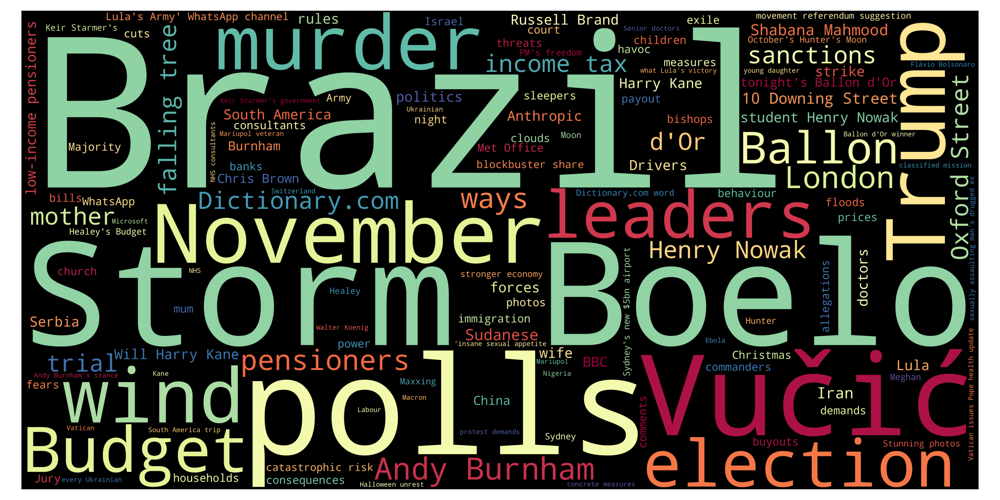
Top 10 unigrams
| Term | Frequency |
|---|---|
| brazil | 11 |
| poll | 6 |
| november | 6 |
| trump | 6 |
| murder | 5 |
| wind | 5 |
| election | 5 |
| leader | 5 |
| budget | 5 |
| ballon | 5 |
Top 10 phrases
| Term | Frequency |
|---|---|
| storm boelo | 7 |
| andy burnham | 5 |
| henry nowak | 4 |
| oxford street | 4 |
| income tax | 4 |
| falling tree | 4 |
| shabana mahmood | 4 |
| student henry nowak | 3 |
| income pensioners | 3 |
| vu i | 3 |
Top 10 new terms (not present on previous day)
| Term | Current day frequency |
|---|---|
| storm boelo | 7 |
| november | 6 |
| ballon | 5 |
| andy burnham | 5 |
| sudanese | 4 |
| shabana mahmood | 4 |
| falling tree | 4 |
| henry nowak | 4 |
| income tax | 4 |
| iran | 4 |
Top 10 increasing terms (vs previous day)
| Term | Difference | Current day frequency | Previous day frequency |
|---|---|---|---|
| brazil | 9 | 11 | 2 |
| poll | 4 | 6 | 2 |
| murder | 4 | 5 | 1 |
| wind | 3 | 5 | 2 |
| trial | 3 | 4 | 1 |
| mother | 3 | 4 | 1 |
| london | 2 | 5 | 3 |
| bbc | 2 | 3 | 1 |
| wife | 2 | 3 | 1 |
| rule | 2 | 3 | 1 |
Top 10 decreasing terms (vs previous day)
| Term | Difference | Current day frequency | Previous day frequency |
|---|---|---|---|
| burnham | -8 | 3 | 11 |
| shooting | -4 | 1 | 5 |
| power | -3 | 2 | 5 |
| leader | -3 | 5 | 8 |
| funding | -2 | 1 | 3 |
| money | -2 | 1 | 3 |
| face | -2 | 1 | 3 |
| serbia | -2 | 3 | 5 |
| son | -2 | 1 | 3 |
| service | -2 | 1 | 3 |
🇮🇹 Italy — 25 Oct 2026
Updated: 27 Oct 2026, 20:15 CETWordcloud
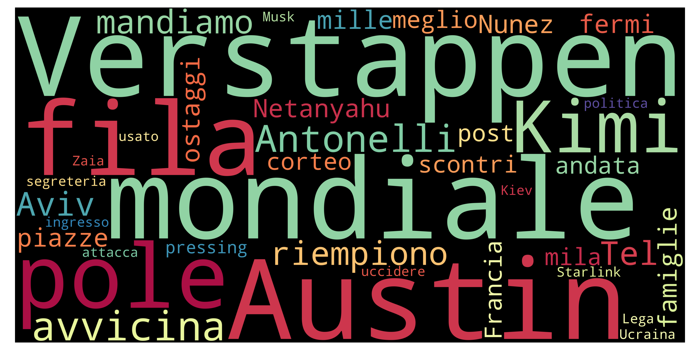
Top 10 unigrams
| Term | Frequency |
|---|---|
| voto | 10 |
| lega | 9 |
| netanyahu | 8 |
| salvini | 7 |
| sfida | 6 |
| siher | 5 |
| garavaglia | 5 |
| segretario | 5 |
| ottobre | 5 |
| brasile | 5 |
Top 10 phrases
No phrases found for this day.
Top 10 new terms (not present on previous day)
| Term | Current day frequency |
|---|---|
| netanyahu | 8 |
| segretario | 5 |
| siher | 5 |
| israele | 4 |
| mattarella | 4 |
| voti | 4 |
| studenti | 4 |
| schlein | 4 |
| youssef | 4 |
| record | 3 |
Top 10 increasing terms (vs previous day)
| Term | Difference | Current day frequency | Previous day frequency |
|---|---|---|---|
| lega | 6 | 9 | 3 |
| voto | 5 | 10 | 5 |
| sfida | 4 | 6 | 2 |
| salvini | 3 | 7 | 4 |
| trump | 3 | 4 | 1 |
| lula | 3 | 4 | 1 |
| roma | 2 | 3 | 1 |
| ucraina | 2 | 4 | 2 |
| bolsonaro | 2 | 4 | 2 |
| stop | 2 | 3 | 1 |
Top 10 decreasing terms (vs previous day)
| Term | Difference | Current day frequency | Previous day frequency |
|---|---|---|---|
| francia | -4 | 5 | 9 |
| scontro | -4 | 1 | 5 |
| anno | -3 | 2 | 5 |
| corteo | -2 | 1 | 3 |
| movimento | -2 | 2 | 4 |
| cisgiordania | -2 | 2 | 4 |
| europa | -1 | 1 | 2 |
| sabato | -1 | 1 | 2 |
| governo | -1 | 1 | 2 |
| attentato | -1 | 1 | 2 |
🇬🇧 UK — 25 Oct 2026
Updated: 27 Oct 2026, 20:15 CETWordcloud
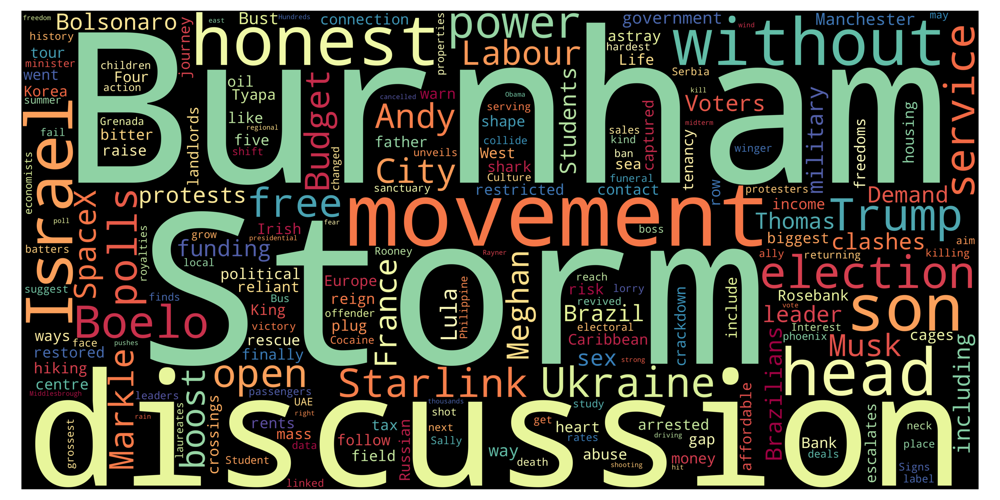
Top 10 unigrams
| Term | Frequency |
|---|---|
| burnham | 11 |
| storm | 9 |
| movement | 8 |
| leader | 8 |
| ukraine | 7 |
| discussion | 6 |
| honest | 6 |
| opposition | 6 |
| boelo | 6 |
| election | 6 |
Top 10 phrases
No phrases found for this day.
Top 10 new terms (not present on previous day)
| Term | Current day frequency |
|---|---|
| storm | 9 |
| movement | 8 |
| opposition | 6 |
| honest | 6 |
| boelo | 6 |
| discussion | 6 |
| trump | 5 |
| four | 5 |
| free | 5 |
| andy | 5 |
Top 10 increasing terms (vs previous day)
| Term | Difference | Current day frequency | Previous day frequency |
|---|---|---|---|
| burnham | 9 | 11 | 2 |
| leader | 7 | 8 | 1 |
| election | 5 | 6 | 1 |
| power | 4 | 5 | 1 |
| boost | 4 | 5 | 1 |
| funding | 2 | 3 | 1 |
| office | 1 | 2 | 1 |
| way | 1 | 3 | 2 |
| culture | 1 | 2 | 1 |
| government | 1 | 5 | 4 |
Top 10 decreasing terms (vs previous day)
| Term | Difference | Current day frequency | Previous day frequency |
|---|---|---|---|
| bahamas | -5 | 2 | 7 |
| price | -4 | 1 | 5 |
| son | -4 | 3 | 7 |
| france | -3 | 3 | 6 |
| meghan | -2 | 3 | 5 |
| family | -2 | 1 | 3 |
| israeli | -2 | 1 | 3 |
| hebron | -2 | 1 | 3 |
| healey | -2 | 1 | 3 |
| protest | -2 | 2 | 4 |
🇮🇹 Italy — 24 Oct 2026
Updated: 27 Oct 2026, 20:15 CETWordcloud
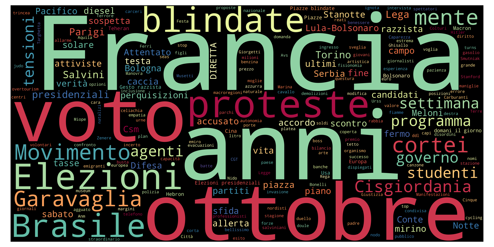
Top 10 unigrams
| Term | Frequency |
|---|---|
| francia | 9 |
| ottobre | 6 |
| anno | 5 |
| voto | 5 |
| protesta | 5 |
| scontro | 5 |
| brasile | 5 |
| garavaglia | 4 |
| movimento | 4 |
| salvini | 4 |
Top 10 phrases
| Term | Frequency |
|---|---|
| domani giorno | 2 |
| elezioni presidenziali | 2 |
| gesto razzista | 2 |
| piazze blindate | 2 |
Top 10 new terms (not present on previous day)
| Term | Current day frequency |
|---|---|
| brasile | 5 |
| scontro | 5 |
| voto | 5 |
| garavaglia | 4 |
| movimento | 4 |
| fermo | 3 |
| manifestante | 3 |
| presidenziale | 3 |
| elezione | 3 |
| festa | 3 |
Top 10 increasing terms (vs previous day)
| Term | Difference | Current day frequency | Previous day frequency |
|---|---|---|---|
| francia | 5 | 9 | 4 |
| salvini | 3 | 4 | 1 |
| protesta | 3 | 5 | 2 |
| lega | 2 | 3 | 1 |
| settimana | 2 | 3 | 1 |
| blindato | 2 | 3 | 1 |
| ottobre | 2 | 6 | 4 |
| programma | 2 | 3 | 1 |
| partito | 1 | 2 | 1 |
| parigi | 1 | 4 | 3 |
Top 10 decreasing terms (vs previous day)
| Term | Difference | Current day frequency | Previous day frequency |
|---|---|---|---|
| meloni | -4 | 2 | 6 |
| ferito | -3 | 1 | 4 |
| guerra | -3 | 2 | 5 |
| ucraina | -3 | 2 | 5 |
| governo | -2 | 2 | 4 |
| social | -2 | 1 | 3 |
| oleshky | -2 | 3 | 5 |
| macron | -2 | 2 | 4 |
| anno | -2 | 5 | 7 |
| trump | -1 | 1 | 2 |
🇬🇧 UK — 24 Oct 2026
Updated: 27 Oct 2026, 20:15 CETWordcloud
Top 10 unigrams
| Term | Frequency |
|---|---|
| ukraine | 8 |
| son | 7 |
| fire | 7 |
| bahamas | 7 |
| france | 6 |
| force | 5 |
| price | 5 |
| meghan | 5 |
| eagle | 5 |
| hitler | 5 |
Top 10 phrases
| Term | Frequency |
|---|---|
| meghan father | 6 |
| storm boelo | 5 |
| sam fender | 3 |
| ticket prices | 3 |
| hitler eagle nest retreat | 3 |
| heavy rain | 3 |
| hundreds thousands | 3 |
| thomas markle | 3 |
| met police | 2 |
| law enforcement | 2 |
Top 10 new terms (not present on previous day)
| Term | Current day frequency |
|---|---|
| bahamas | 7 |
| eagle | 5 |
| storm boelo | 5 |
| hitler | 5 |
| suspect | 3 |
| bahama | 3 |
| ticket prices | 3 |
| family | 3 |
| prisoner | 3 |
| sam fender | 3 |
Top 10 increasing terms (vs previous day)
| Term | Difference | Current day frequency | Previous day frequency |
|---|---|---|---|
| fire | 6 | 7 | 1 |
| son | 6 | 7 | 1 |
| france | 4 | 6 | 2 |
| price | 4 | 5 | 1 |
| force | 3 | 5 | 2 |
| protest | 3 | 4 | 1 |
| meghan father | 3 | 6 | 3 |
| ukraine | 2 | 8 | 6 |
| starlink | 2 | 3 | 1 |
| thousand | 2 | 4 | 2 |
Top 10 decreasing terms (vs previous day)
| Term | Difference | Current day frequency | Previous day frequency |
|---|---|---|---|
| allegation | -4 | 4 | 8 |
| soldier | -4 | 1 | 5 |
| burnham | -4 | 2 | 6 |
| gunman | -3 | 1 | 4 |
| wind | -2 | 1 | 3 |
| voter | -2 | 1 | 3 |
| power | -2 | 1 | 3 |
| fear | -2 | 1 | 3 |
| wife | -1 | 1 | 2 |
| murder | -1 | 2 | 3 |
🇮🇹 Italy — 23 Oct 2026
Updated: 27 Oct 2026, 20:15 CETWordcloud
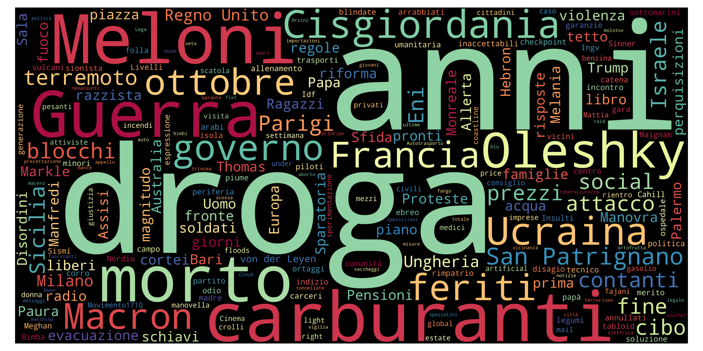
Top 10 unigrams
| Term | Frequency |
|---|---|
| anno | 7 |
| droga | 7 |
| meloni | 6 |
| guerra | 5 |
| morto | 5 |
| oleshky | 5 |
| cisgiordania | 5 |
| ucraina | 5 |
| carburante | 4 |
| ferito | 4 |
Top 10 phrases
| Term | Frequency |
|---|---|
| san patrignano | 4 |
| regno unito | 3 |
| von der leyen | 2 |
Top 10 new terms (not present on previous day)
| Term | Current day frequency |
|---|---|
| droga | 7 |
| oleshky | 5 |
| san patrignano | 4 |
| ferito | 4 |
| ungheria | 3 |
| terremoto | 3 |
| parigi | 3 |
| cibo | 3 |
| regno unito | 3 |
| eni | 3 |
Top 10 increasing terms (vs previous day)
| Term | Difference | Current day frequency | Previous day frequency |
|---|---|---|---|
| morto | 4 | 5 | 1 |
| social | 2 | 3 | 1 |
| prezzo | 2 | 3 | 1 |
| fine | 2 | 3 | 1 |
| attacco | 2 | 3 | 1 |
| regola | 1 | 2 | 1 |
| acqua | 1 | 2 | 1 |
| risposta | 1 | 2 | 1 |
| corteo | 1 | 2 | 1 |
| macron | 1 | 4 | 3 |
Top 10 decreasing terms (vs previous day)
| Term | Difference | Current day frequency | Previous day frequency |
|---|---|---|---|
| protesta | -6 | 2 | 8 |
| mattarella | -4 | 1 | 5 |
| milano | -4 | 3 | 7 |
| guerra | -3 | 5 | 8 |
| minore | -2 | 1 | 3 |
| nordio | -2 | 1 | 3 |
| giovane | -2 | 1 | 3 |
| governo | -2 | 4 | 6 |
| carcere | -2 | 1 | 3 |
| lavoro | -1 | 1 | 2 |
🇬🇧 UK — 23 Oct 2026
Updated: 27 Oct 2026, 20:15 CETWordcloud
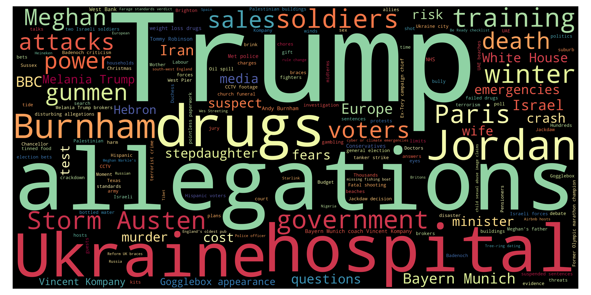
Top 10 unigrams
| Term | Frequency |
|---|---|
| allegation | 8 |
| hospital | 7 |
| trump | 7 |
| drug | 6 |
| paris | 6 |
| ukraine | 6 |
| jordan | 6 |
| burnham | 6 |
| soldier | 5 |
| government | 5 |
Top 10 phrases
| Term | Frequency |
|---|---|
| storm austen | 6 |
| bayern munich | 4 |
| andy burnham | 4 |
| melania trump | 3 |
| white house | 3 |
| meghan father | 3 |
| vincent kompany | 3 |
| bayern munich training | 3 |
| tommy robinson | 3 |
| weight loss drugs | 3 |
Top 10 new terms (not present on previous day)
| Term | Current day frequency |
|---|---|
| burnham | 6 |
| jordan | 6 |
| paris | 6 |
| soldier | 5 |
| macron | 5 |
| meghan | 5 |
| bayern munich | 4 |
| iran | 4 |
| gunman | 4 |
| white house | 3 |
Top 10 increasing terms (vs previous day)
| Term | Difference | Current day frequency | Previous day frequency |
|---|---|---|---|
| allegation | 7 | 8 | 1 |
| hospital | 6 | 7 | 1 |
| drug | 5 | 6 | 1 |
| storm austen | 4 | 6 | 2 |
| ukraine | 3 | 6 | 3 |
| sale | 3 | 4 | 1 |
| winter | 3 | 5 | 2 |
| israel | 2 | 4 | 2 |
| stepdaughter | 2 | 3 | 1 |
| hundred | 1 | 2 | 1 |
Top 10 decreasing terms (vs previous day)
| Term | Difference | Current day frequency | Previous day frequency |
|---|---|---|---|
| police officer | -6 | 2 | 8 |
| government | -4 | 5 | 9 |
| france | -4 | 2 | 6 |
| court | -4 | 2 | 6 |
| service | -4 | 1 | 5 |
| russia | -3 | 2 | 5 |
| car | -3 | 1 | 4 |
| patient | -2 | 1 | 3 |
| europe | -2 | 2 | 4 |
| rule | -2 | 2 | 4 |
🇮🇹 Italy — 22 Oct 2026
Updated: 27 Oct 2026, 20:15 CETWordcloud
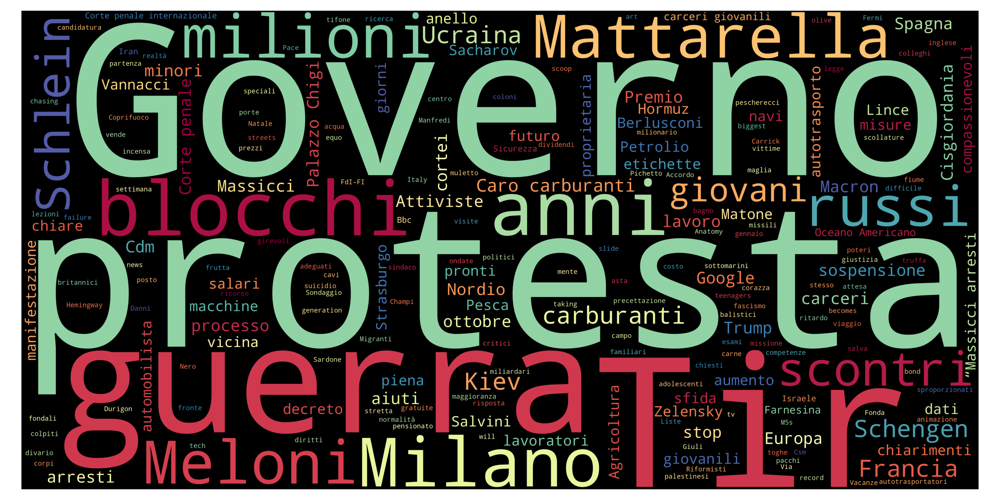
Top 10 unigrams
| Term | Frequency |
|---|---|
| guerra | 8 |
| anno | 8 |
| protesta | 8 |
| milano | 7 |
| tir | 7 |
| governo | 6 |
| milione | 5 |
| mattarella | 5 |
| meloni | 5 |
| ucraina | 5 |
Top 10 phrases
| Term | Frequency |
|---|---|
| caro carburanti | 4 |
| palazzo chigi | 3 |
| corte penale | 3 |
| carceri giovanili | 2 |
| massicci arresti | 2 |
| oceano americano | 2 |
| corte penale internazionale | 2 |
| cinque attiviste | 2 |
Top 10 new terms (not present on previous day)
| Term | Current day frequency |
|---|---|
| francia | 5 |
| kiev | 4 |
| caro carburanti | 4 |
| ottobre | 3 |
| carcere | 3 |
| israele | 3 |
| processo | 3 |
| corte penale | 3 |
| schlein | 3 |
| 3 |
Top 10 increasing terms (vs previous day)
| Term | Difference | Current day frequency | Previous day frequency |
|---|---|---|---|
| guerra | 6 | 8 | 2 |
| tir | 5 | 7 | 2 |
| anno | 3 | 8 | 5 |
| cisgiordania | 3 | 5 | 2 |
| scontro | 3 | 4 | 1 |
| milano | 3 | 7 | 4 |
| governo | 3 | 6 | 3 |
| protesta | 2 | 8 | 6 |
| aiuto | 2 | 3 | 1 |
| russo | 2 | 4 | 2 |
Top 10 decreasing terms (vs previous day)
| Term | Difference | Current day frequency | Previous day frequency |
|---|---|---|---|
| putin | -6 | 3 | 9 |
| trump | -5 | 3 | 8 |
| giovane | -5 | 3 | 8 |
| militare | -3 | 1 | 4 |
| zelensky | -3 | 2 | 5 |
| social | -3 | 1 | 4 |
| papa | -3 | 1 | 4 |
| fine | -3 | 1 | 4 |
| primo | -2 | 1 | 3 |
| morto | -2 | 1 | 3 |
🇬🇧 UK — 22 Oct 2026
Updated: 27 Oct 2026, 20:15 CETWordcloud
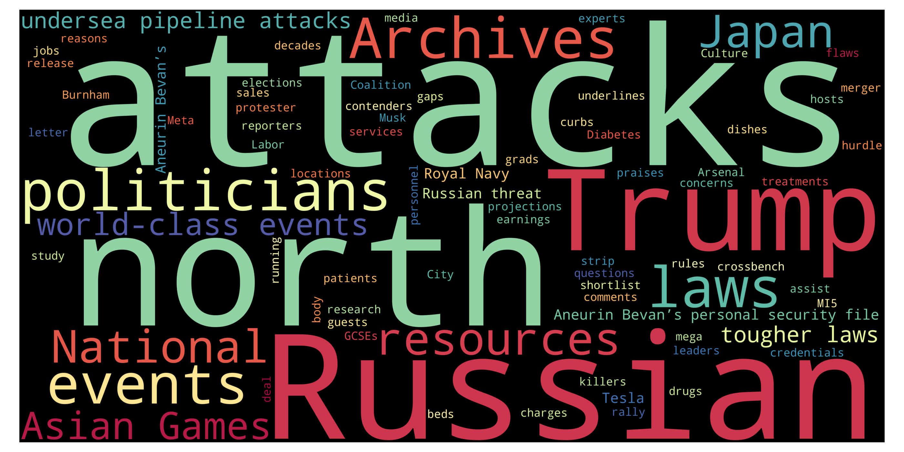
Top 10 unigrams
| Term | Frequency |
|---|---|
| government | 9 |
| attack | 8 |
| nottingham | 8 |
| court | 6 |
| bbc | 6 |
| trump | 6 |
| france | 6 |
| service | 5 |
| death | 5 |
| russia | 5 |
Top 10 phrases
| Term | Frequency |
|---|---|
| police officer | 8 |
| cyber security flaw | 4 |
| russell brand | 4 |
| nottingham city centre | 3 |
| andy burnham | 3 |
| shamonda virus | 3 |
| cyber climate emergencies | 2 |
| supply chain disruption | 2 |
| services computer systems | 2 |
| bbc lawsuit | 2 |
Top 10 new terms (not present on previous day)
| Term | Current day frequency |
|---|---|
| government | 9 |
| police officer | 8 |
| nottingham | 8 |
| attack | 8 |
| php | 5 |
| service | 5 |
| cyber security flaw | 4 |
| gang | 4 |
| rule | 4 |
| shooting | 4 |
Top 10 increasing terms (vs previous day)
| Term | Difference | Current day frequency | Previous day frequency |
|---|---|---|---|
| russia | 3 | 5 | 2 |
| car | 3 | 4 | 1 |
| household | 3 | 4 | 1 |
| bbc | 3 | 6 | 3 |
| journalist | 2 | 3 | 1 |
| russell brand | 2 | 4 | 2 |
| danger | 1 | 2 | 1 |
| murder | 1 | 3 | 2 |
| decade | 1 | 2 | 1 |
| winter | 1 | 2 | 1 |
Top 10 decreasing terms (vs previous day)
| Term | Difference | Current day frequency | Previous day frequency |
|---|---|---|---|
| bill | -5 | 1 | 6 |
| life | -3 | 2 | 5 |
| time | -3 | 3 | 6 |
| treatment | -3 | 1 | 4 |
| ukraine | -3 | 3 | 6 |
| website | -3 | 1 | 4 |
| family | -3 | 1 | 4 |
| thousand | -2 | 3 | 5 |
| advance | -2 | 1 | 3 |
| row | -1 | 1 | 2 |
🇮🇹 Italy — 21 Oct 2026
Updated: 27 Oct 2026, 20:15 CETWordcloud
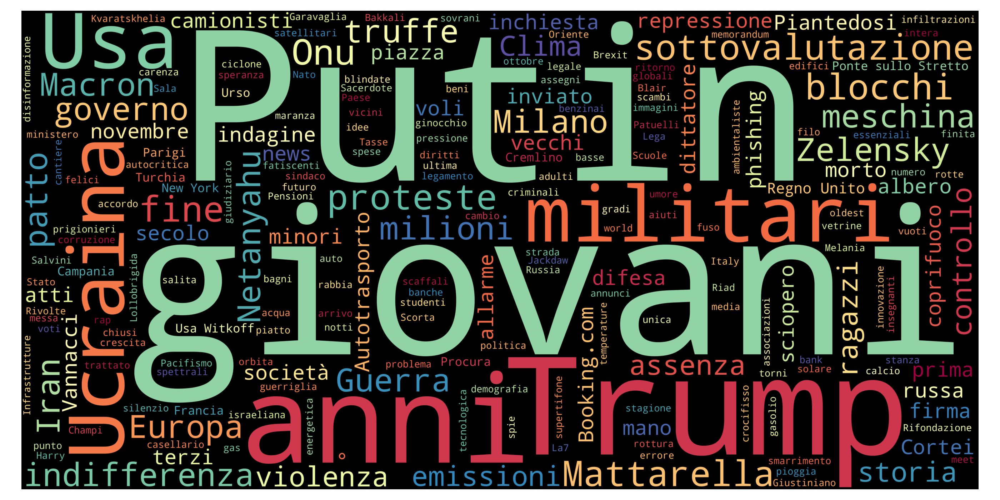
Top 10 unigrams
| Term | Frequency |
|---|---|
| putin | 9 |
| giovane | 8 |
| trump | 8 |
| usa | 7 |
| protesta | 6 |
| ucraina | 6 |
| anno | 5 |
| zelensky | 5 |
| papa | 4 |
| meloni | 4 |
Top 10 phrases
| Term | Frequency |
|---|---|
| alcuna terapia | 3 |
| scontri duomo | 2 |
| regno unito | 2 |
| mare del nord | 2 |
| usa witkoff | 2 |
| arabia saudita | 2 |
| new york | 2 |
| opinione giovani | 2 |
Top 10 new terms (not present on previous day)
| Term | Current day frequency |
|---|---|
| giovane | 8 |
| viminale | 4 |
| papa | 4 |
| onu | 4 |
| fine | 4 |
| sottovalutazione | 4 |
| meschina | 3 |
| patto | 3 |
| milione | 3 |
| netanyahu | 3 |
Top 10 increasing terms (vs previous day)
| Term | Difference | Current day frequency | Previous day frequency |
|---|---|---|---|
| putin | 6 | 9 | 3 |
| usa | 5 | 7 | 2 |
| social | 3 | 4 | 1 |
| blocco | 3 | 4 | 1 |
| primo | 2 | 3 | 1 |
| mattarella | 2 | 4 | 2 |
| miliardo | 2 | 3 | 1 |
| fermo | 2 | 4 | 2 |
| anno | 2 | 5 | 3 |
| terzo | 1 | 2 | 1 |
Top 10 decreasing terms (vs previous day)
| Term | Difference | Current day frequency | Previous day frequency |
|---|---|---|---|
| milano | -4 | 4 | 8 |
| parigi | -3 | 3 | 6 |
| reato | -3 | 1 | 4 |
| coprifuoco | -2 | 2 | 4 |
| libero | -2 | 1 | 3 |
| misura | -2 | 1 | 3 |
| piazza | -2 | 2 | 4 |
| stop | -2 | 1 | 3 |
| iran | -2 | 2 | 4 |
| scontri | -2 | 2 | 4 |
🇬🇧 UK — 21 Oct 2026
Updated: 27 Oct 2026, 20:15 CETWordcloud
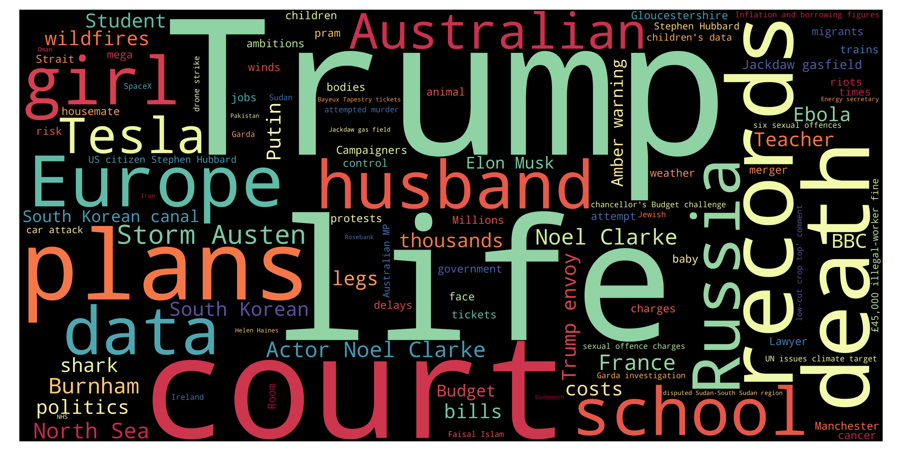
Top 10 unigrams
| Term | Frequency |
|---|---|
| rape | 7 |
| trump | 7 |
| bill | 6 |
| time | 6 |
| ukraine | 6 |
| plan | 5 |
| cost | 5 |
| life | 5 |
| court | 5 |
| police | 5 |
Top 10 phrases
| Term | Frequency |
|---|---|
| jeffrey donaldson | 5 |
| jailed former dup leader jeffrey donaldson | 4 |
| energy secretary | 4 |
| north sea | 4 |
| jackdaw decision | 3 |
| prostate cancer | 3 |
| raf fairford | 3 |
| raf fairford investigation | 3 |
| noel clarke | 3 |
| actor noel clarke | 3 |
Top 10 new terms (not present on previous day)
| Term | Current day frequency |
|---|---|
| bill | 6 |
| death | 5 |
| tesla | 5 |
| jeffrey donaldson | 5 |
| life | 5 |
| parliament | 4 |
| family | 4 |
| north sea | 4 |
| dup | 4 |
| room | 4 |
Top 10 increasing terms (vs previous day)
| Term | Difference | Current day frequency | Previous day frequency |
|---|---|---|---|
| thousand | 4 | 5 | 1 |
| cost | 3 | 5 | 2 |
| time | 3 | 6 | 3 |
| website | 3 | 4 | 1 |
| plan | 3 | 5 | 2 |
| rape | 3 | 7 | 4 |
| france | 3 | 5 | 2 |
| antisemitism | 3 | 4 | 1 |
| police | 3 | 5 | 2 |
| risk | 2 | 3 | 1 |
Top 10 decreasing terms (vs previous day)
| Term | Difference | Current day frequency | Previous day frequency |
|---|---|---|---|
| suspicion | -4 | 1 | 5 |
| protest | -4 | 1 | 5 |
| strike | -3 | 1 | 4 |
| bbc | -3 | 3 | 6 |
| nhs | -3 | 2 | 5 |
| russell brand | -3 | 2 | 5 |
| covid | -3 | 2 | 5 |
| murder | -2 | 2 | 4 |
| care homes | -2 | 2 | 4 |
| raf fairford | -2 | 3 | 5 |
🇮🇹 Italy — 20 Oct 2026
Updated: 27 Oct 2026, 20:15 CETWordcloud
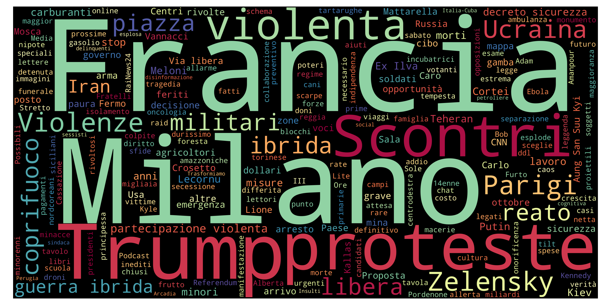
Top 10 unigrams
| Term | Frequency |
|---|---|
| francia | 10 |
| milano | 8 |
| trump | 7 |
| protesta | 6 |
| violento | 6 |
| zelensky | 6 |
| parigi | 6 |
| ucraina | 5 |
| coprifuoco | 4 |
| piazza | 4 |
Top 10 phrases
| Term | Frequency |
|---|---|
| guerra ibrida | 4 |
| partecipazione violenta | 4 |
| ex ilva | 3 |
| decreto sicurezza | 3 |
| aung san suu kyi | 2 |
| via libera | 2 |
Top 10 new terms (not present on previous day)
| Term | Current day frequency |
|---|---|
| violento | 6 |
| ibrido | 4 |
| partecipazione violenta | 4 |
| guerra ibrida | 4 |
| reato | 4 |
| decreto sicurezza | 3 |
| teheran | 3 |
| misura | 3 |
| libero | 3 |
| lecornu | 3 |
Top 10 increasing terms (vs previous day)
| Term | Difference | Current day frequency | Previous day frequency |
|---|---|---|---|
| iran | 3 | 4 | 1 |
| violenze | 2 | 4 | 2 |
| stop | 2 | 3 | 1 |
| anno | 2 | 3 | 1 |
| militare | 2 | 4 | 2 |
| lavoro | 2 | 3 | 1 |
| russia | 1 | 2 | 1 |
| arma | 1 | 2 | 1 |
| proposta | 1 | 2 | 1 |
| minore | 1 | 3 | 2 |
Top 10 decreasing terms (vs previous day)
| Term | Difference | Current day frequency | Previous day frequency |
|---|---|---|---|
| scontro | -7 | 2 | 9 |
| negozio | -4 | 1 | 5 |
| governo | -3 | 2 | 5 |
| usa | -3 | 2 | 5 |
| putin | -2 | 3 | 5 |
| tempesta | -2 | 1 | 3 |
| forza | -2 | 1 | 3 |
| adam | -2 | 1 | 3 |
| scontri | -2 | 4 | 6 |
| indipendenza | -1 | 1 | 2 |
🇬🇧 UK — 20 Oct 2026
Updated: 27 Oct 2026, 20:15 CETWordcloud
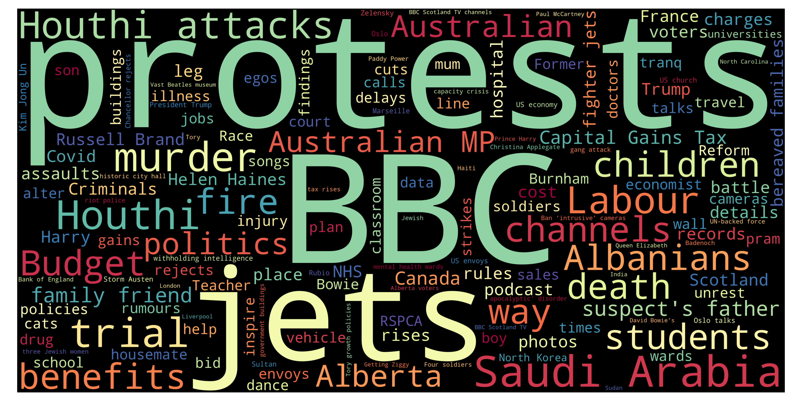
Top 10 unigrams
| Term | Frequency |
|---|---|
| student | 6 |
| court | 6 |
| iran | 6 |
| bbc | 6 |
| alberta | 6 |
| suspicion | 5 |
| rule | 5 |
| jet | 5 |
| protest | 5 |
| hospital | 5 |
Top 10 phrases
| Term | Frequency |
|---|---|
| raf fairford incident | 5 |
| raf fairford | 5 |
| russell brand | 5 |
| saudi arabia | 5 |
| care homes | 4 |
| houthi attacks | 4 |
| helen haines | 4 |
| capital gains tax | 3 |
| bereaved families | 3 |
| shark attack | 3 |
Top 10 new terms (not present on previous day)
| Term | Current day frequency |
|---|---|
| court | 6 |
| student | 6 |
| raf fairford | 5 |
| jet | 5 |
| hospital | 5 |
| benefit | 5 |
| raf fairford incident | 5 |
| covid | 5 |
| channel | 4 |
| way | 4 |
Top 10 increasing terms (vs previous day)
| Term | Difference | Current day frequency | Previous day frequency |
|---|---|---|---|
| suspicion | 4 | 5 | 1 |
| iran | 4 | 6 | 2 |
| bbc | 4 | 6 | 2 |
| rule | 4 | 5 | 1 |
| nhs | 3 | 5 | 2 |
| alberta | 3 | 6 | 3 |
| ukraine | 3 | 5 | 2 |
| canada | 3 | 5 | 2 |
| russell brand | 3 | 5 | 2 |
| place | 2 | 3 | 1 |
Top 10 decreasing terms (vs previous day)
| Term | Difference | Current day frequency | Previous day frequency |
|---|---|---|---|
| australian | -5 | 2 | 7 |
| russia | -4 | 2 | 6 |
| car | -4 | 1 | 5 |
| soldier | -3 | 1 | 4 |
| france | -3 | 2 | 5 |
| researcher | -3 | 1 | 4 |
| child | -3 | 4 | 7 |
| kilometre | -2 | 1 | 3 |
| poll | -2 | 1 | 3 |
| parent | -2 | 1 | 3 |
🇮🇹 Italy — 19 Oct 2026
Updated: 27 Oct 2026, 20:15 CETWordcloud
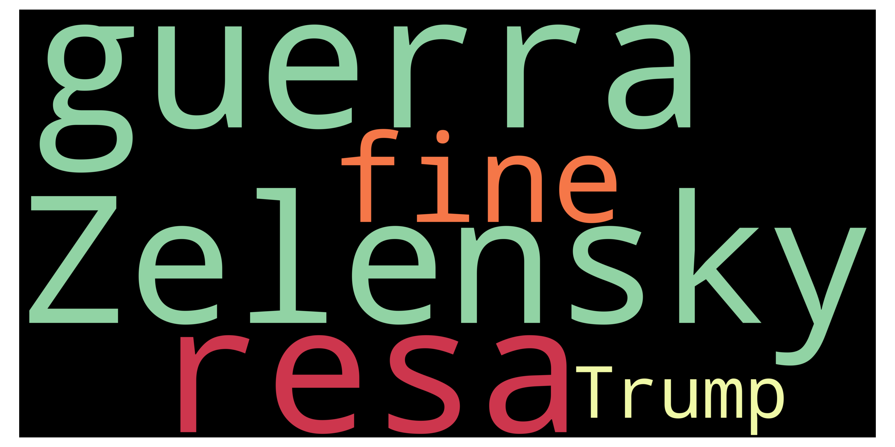
Top 10 unigrams
| Term | Frequency |
|---|---|
| francia | 10 |
| scontro | 9 |
| trump | 8 |
| milano | 8 |
| parigi | 7 |
| protesta | 6 |
| scontri | 6 |
| negozio | 5 |
| putin | 5 |
| zelensky | 5 |
Top 10 phrases
| Term | Frequency |
|---|---|
| mila euro | 3 |
| violenze inaccettabili | 3 |
| papa leone xiv | 2 |
| palazzo chigi | 2 |
| presidente ucraino | 2 |
| gilet gialli | 2 |
Top 10 new terms (not present on previous day)
| Term | Current day frequency |
|---|---|
| voto | 5 |
| coprifuoco | 4 |
| louvre | 4 |
| studente | 4 |
| adam | 3 |
| mila euro | 3 |
| inaccettabile | 3 |
| spagna | 3 |
| violenze inaccettabili | 3 |
| tempesta | 3 |
Top 10 increasing terms (vs previous day)
| Term | Difference | Current day frequency | Previous day frequency |
|---|---|---|---|
| governo | 4 | 5 | 1 |
| negozio | 4 | 5 | 1 |
| protesta | 4 | 6 | 2 |
| scontri | 4 | 6 | 2 |
| zelensky | 3 | 5 | 2 |
| attacco | 3 | 4 | 1 |
| usa | 3 | 5 | 2 |
| vertice | 3 | 5 | 2 |
| morto | 3 | 4 | 1 |
| scontro | 2 | 9 | 7 |
Top 10 decreasing terms (vs previous day)
| Term | Difference | Current day frequency | Previous day frequency |
|---|---|---|---|
| meloni | -11 | 4 | 15 |
| magistrato | -5 | 1 | 6 |
| trump | -4 | 8 | 12 |
| anno | -3 | 1 | 4 |
| saccheggio | -3 | 1 | 4 |
| macron | -3 | 2 | 5 |
| crisi | -3 | 1 | 4 |
| destra | -2 | 1 | 3 |
| tempo | -2 | 1 | 3 |
| violenza | -2 | 3 | 5 |
🇬🇧 UK — 19 Oct 2026
Updated: 27 Oct 2026, 20:15 CETWordcloud
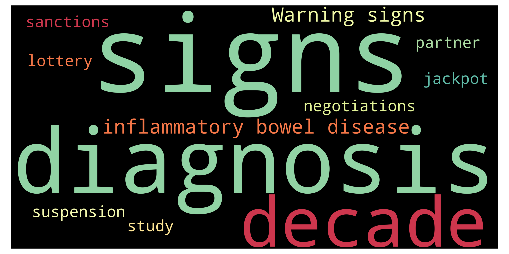
Top 10 unigrams
| Term | Frequency |
|---|---|
| child | 7 |
| australian | 7 |
| russia | 6 |
| europe | 6 |
| attack | 5 |
| car | 5 |
| france | 5 |
| french | 5 |
| trump | 5 |
| curfew | 4 |
Top 10 phrases
| Term | Frequency |
|---|---|
| ex openai | 3 |
| warning signs | 3 |
| one adult | 3 |
| saudi arabia | 3 |
| amelia earhart | 3 |
| australian mp | 2 |
| russell brand | 2 |
| intelligence sharing | 2 |
| zelensky adviser | 2 |
| kenya cult leader | 2 |
Top 10 new terms (not present on previous day)
| Term | Current day frequency |
|---|---|
| australian | 7 |
| russia | 6 |
| attack | 5 |
| researcher | 4 |
| soldier | 4 |
| tree | 4 |
| curfew | 4 |
| murder | 4 |
| ex openai | 3 |
| poll | 3 |
Top 10 increasing terms (vs previous day)
| Term | Difference | Current day frequency | Previous day frequency |
|---|---|---|---|
| europe | 4 | 6 | 2 |
| france | 3 | 5 | 2 |
| french | 3 | 5 | 2 |
| trump | 3 | 5 | 2 |
| child | 3 | 7 | 4 |
| car | 3 | 5 | 2 |
| second | 2 | 3 | 1 |
| canadian | 1 | 3 | 2 |
| arrest | 1 | 2 | 1 |
| riot | 1 | 4 | 3 |
Top 10 decreasing terms (vs previous day)
| Term | Difference | Current day frequency | Previous day frequency |
|---|---|---|---|
| state | -3 | 1 | 4 |
| drug | -2 | 1 | 3 |
| racism | -2 | 1 | 3 |
| police officer | -2 | 2 | 4 |
| funeral | -2 | 1 | 3 |
| music | -1 | 1 | 2 |
| place | -1 | 1 | 2 |
| government | -1 | 1 | 2 |
| life | -1 | 1 | 2 |
| west bank | -1 | 2 | 3 |
🇮🇹 Italy — 18 Oct 2026
Updated: 27 Oct 2026, 20:15 CETWordcloud
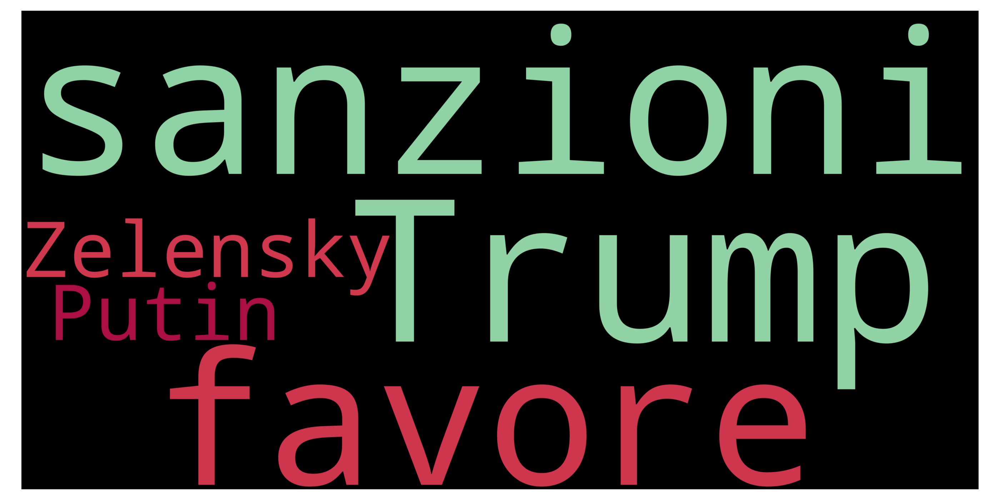
Top 10 unigrams
| Term | Frequency |
|---|---|
| meloni | 15 |
| trump | 12 |
| milano | 8 |
| francia | 8 |
| scontro | 7 |
| magistrato | 6 |
| parigi | 6 |
| violenza | 5 |
| macron | 5 |
| netanyahu | 5 |
Top 10 phrases
| Term | Frequency |
|---|---|
| base militare | 5 |
| san pietroburgo | 4 |
| assemblea pd | 2 |
| pochi agenti | 2 |
| elly schlein | 2 |
| ordine pubblico | 2 |
| stop sanzioni | 2 |
Top 10 new terms (not present on previous day)
| Term | Current day frequency |
|---|---|
| magistrato | 6 |
| base militare | 5 |
| netanyahu | 5 |
| macron | 5 |
| crisi | 4 |
| forza | 4 |
| san pietroburgo | 4 |
| saccheggio | 4 |
| canada | 4 |
| destra | 3 |
Top 10 increasing terms (vs previous day)
| Term | Difference | Current day frequency | Previous day frequency |
|---|---|---|---|
| meloni | 11 | 15 | 4 |
| milano | 4 | 8 | 4 |
| parigi | 3 | 6 | 3 |
| violenza | 3 | 5 | 2 |
| schlein | 2 | 3 | 1 |
| città | 2 | 3 | 1 |
| primario | 2 | 3 | 1 |
| anno | 2 | 4 | 2 |
| fermo | 2 | 4 | 2 |
| stipendio | 2 | 3 | 1 |
Top 10 decreasing terms (vs previous day)
| Term | Difference | Current day frequency | Previous day frequency |
|---|---|---|---|
| fermato | -4 | 1 | 5 |
| piazza | -3 | 3 | 6 |
| pronto | -2 | 1 | 3 |
| migliaio | -2 | 1 | 3 |
| decina | -2 | 1 | 3 |
| miliardo | -2 | 2 | 4 |
| mosca | -2 | 3 | 5 |
| manifestante | -2 | 1 | 3 |
| scontri | -2 | 2 | 4 |
| ucraina | -1 | 3 | 4 |
🇬🇧 UK — 18 Oct 2026
Updated: 27 Oct 2026, 20:15 CETWordcloud
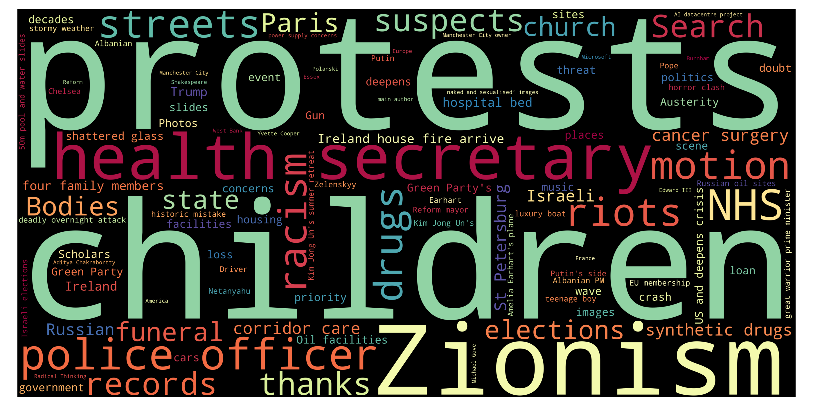
Top 10 unigrams
| Term | Frequency |
|---|---|
| zionism | 5 |
| protest | 4 |
| child | 4 |
| state | 4 |
| riot | 3 |
| street | 3 |
| motion | 3 |
| racism | 3 |
| drug | 3 |
| suspect | 3 |
Top 10 phrases
| Term | Frequency |
|---|---|
| health secretary | 4 |
| police officer | 4 |
| synthetic drugs | 3 |
| st petersburg | 3 |
| corridor care | 3 |
| cancer surgery | 3 |
| four family | 3 |
| ireland house fire arrive | 3 |
| hospital bed | 3 |
| west bank | 3 |
Top 10 new terms (not present on previous day)
| Term | Current day frequency |
|---|---|
| zionism | 5 |
| state | 4 |
| child | 4 |
| police officer | 4 |
| health secretary | 4 |
| motion | 3 |
| st petersburg | 3 |
| church | 3 |
| drug | 3 |
| cancer surgery | 3 |
Top 10 increasing terms (vs previous day)
| Term | Difference | Current day frequency | Previous day frequency |
|---|---|---|---|
| street | 2 | 3 | 1 |
| election | 2 | 3 | 1 |
| support | 1 | 2 | 1 |
| life | 1 | 2 | 1 |
| russian | 1 | 3 | 2 |
| protest | 1 | 4 | 3 |
| zelenskyy | 1 | 2 | 1 |
Top 10 decreasing terms (vs previous day)
| Term | Difference | Current day frequency | Previous day frequency |
|---|---|---|---|
| settler | -5 | 1 | 6 |
| diplomat | -5 | 1 | 6 |
| west bank | -3 | 3 | 6 |
| sanction | -3 | 1 | 4 |
| victim | -2 | 1 | 3 |
| french | -2 | 2 | 4 |
| israeli | -2 | 3 | 5 |
| time | -1 | 1 | 2 |
| row | -1 | 1 | 2 |
| intensifie | -1 | 1 | 2 |
🇮🇹 Italy — 17 Oct 2026
Updated: 27 Oct 2026, 20:15 CETWordcloud

Top 10 unigrams
| Term | Frequency |
|---|---|
| trump | 11 |
| scontro | 7 |
| francia | 7 |
| piazza | 6 |
| fermato | 5 |
| mosca | 5 |
| miliardo | 4 |
| centro | 4 |
| putin | 4 |
| guerra | 4 |
Top 10 phrases
| Term | Frequency |
|---|---|
| meritocrazia italia | 5 |
| momento storico | 3 |
| sciopero generale | 2 |
| casa bianca | 2 |
| papa leone | 2 |
Top 10 new terms (not present on previous day)
| Term | Current day frequency |
|---|---|
| francia | 7 |
| fermato | 5 |
| milano | 4 |
| scontri | 4 |
| centro | 4 |
| manifestante | 3 |
| momento storico | 3 |
| landini | 3 |
| 13enne | 3 |
| cgil | 3 |
Top 10 increasing terms (vs previous day)
| Term | Difference | Current day frequency | Previous day frequency |
|---|---|---|---|
| scontro | 6 | 7 | 1 |
| piazza | 4 | 6 | 2 |
| miliardo | 3 | 4 | 1 |
| mosca | 3 | 5 | 2 |
| fiamma | 3 | 4 | 1 |
| meritocrazia italia | 2 | 5 | 3 |
| pronto | 2 | 3 | 1 |
| errore | 1 | 2 | 1 |
| gemelli | 1 | 2 | 1 |
| violenza | 1 | 2 | 1 |
Top 10 decreasing terms (vs previous day)
| Term | Difference | Current day frequency | Previous day frequency |
|---|---|---|---|
| zelensky | -8 | 2 | 10 |
| meloni | -6 | 4 | 10 |
| giorno | -6 | 1 | 7 |
| accordo | -4 | 1 | 5 |
| ucraina | -3 | 4 | 7 |
| portavoce | -2 | 2 | 4 |
| figlio | -2 | 1 | 3 |
| studente | -2 | 1 | 3 |
| tregua | -1 | 1 | 2 |
| anno | -1 | 2 | 3 |
🇬🇧 UK — 17 Oct 2026
Updated: 27 Oct 2026, 20:15 CETWordcloud

Top 10 unigrams
| Term | Frequency |
|---|---|
| hospital | 7 |
| diplomat | 6 |
| settler | 6 |
| european | 6 |
| protester | 5 |
| israeli | 5 |
| russia | 5 |
| sanction | 4 |
| french | 4 |
| record | 3 |
Top 10 phrases
| Term | Frequency |
|---|---|
| west bank | 6 |
| european diplomats | 6 |
| israeli settlers | 5 |
| light aircraft crash | 5 |
| lung cancer surgery | 4 |
| loch lomond | 3 |
| russia sanctions | 3 |
| pope leo | 3 |
| saudi arabia | 3 |
| german steakhouse heiress | 2 |
Top 10 new terms (not present on previous day)
| Term | Current day frequency |
|---|---|
| diplomat | 6 |
| european diplomats | 6 |
| european | 6 |
| light aircraft crash | 5 |
| sanction | 4 |
| french | 4 |
| brexit | 3 |
| saudi arabia | 3 |
| victim | 3 |
| murder | 3 |
Top 10 increasing terms (vs previous day)
| Term | Difference | Current day frequency | Previous day frequency |
|---|---|---|---|
| hospital | 6 | 7 | 1 |
| protester | 4 | 5 | 1 |
| lung cancer surgery | 2 | 4 | 2 |
| settler | 2 | 6 | 4 |
| israeli settlers | 2 | 5 | 3 |
| west bank | 1 | 6 | 5 |
| russia | 1 | 5 | 4 |
| israeli | 1 | 5 | 4 |
| remark | 1 | 2 | 1 |
Top 10 decreasing terms (vs previous day)
| Term | Difference | Current day frequency | Previous day frequency |
|---|---|---|---|
| record | -7 | 3 | 10 |
| ukraine | -4 | 2 | 6 |
| trump | -3 | 2 | 5 |
| nhs | -2 | 3 | 5 |
| protest | -2 | 3 | 5 |
| row | -1 | 2 | 3 |
| bbc | -1 | 2 | 3 |
| drought | -1 | 1 | 2 |
| burnham | -1 | 2 | 3 |
| court | -1 | 1 | 2 |
🇮🇹 Italy — 16 Oct 2026
Updated: 27 Oct 2026, 20:15 CETWordcloud

Top 10 unigrams
| Term | Frequency |
|---|---|
| meloni | 10 |
| trump | 10 |
| zelensky | 10 |
| usa | 8 |
| giorno | 7 |
| bambino | 7 |
| ucraina | 7 |
| putin | 5 |
| guerra | 5 |
| accordo | 5 |
Top 10 phrases
| Term | Frequency |
|---|---|
| scuola elementare | 4 |
| casa bianca | 3 |
| papa leone | 3 |
| meritocrazia italia | 3 |
| città ucraina | 2 |
| vertice ue caro energia tagli | 2 |
| dl bollette intesa ue | 2 |
Top 10 new terms (not present on previous day)
| Term | Current day frequency |
|---|---|
| putin | 5 |
| roma | 4 |
| oleshky | 4 |
| oregon | 4 |
| scuola elementare | 4 |
| papa leone | 3 |
| meritocrazia italia | 3 |
| costo | 3 |
| gaza | 3 |
| figlio | 3 |
Top 10 increasing terms (vs previous day)
| Term | Difference | Current day frequency | Previous day frequency |
|---|---|---|---|
| giorno | 6 | 7 | 1 |
| meloni | 6 | 10 | 4 |
| bambino | 4 | 7 | 3 |
| accordo | 4 | 5 | 1 |
| usa | 4 | 8 | 4 |
| taglio | 2 | 3 | 1 |
| portavoce | 2 | 4 | 2 |
| accusa | 2 | 3 | 1 |
| banca | 2 | 4 | 2 |
| zelensky | 2 | 10 | 8 |
Top 10 decreasing terms (vs previous day)
| Term | Difference | Current day frequency | Previous day frequency |
|---|---|---|---|
| ucraina | -6 | 7 | 13 |
| kiev | -4 | 4 | 8 |
| morto | -4 | 2 | 6 |
| killer | -3 | 1 | 4 |
| trump | -2 | 10 | 12 |
| mondo | -2 | 1 | 3 |
| aiuto | -2 | 1 | 3 |
| sfida | -2 | 1 | 3 |
| bilancio | -2 | 1 | 3 |
| ferito | -2 | 1 | 3 |
🇬🇧 UK — 16 Oct 2026
Updated: 27 Oct 2026, 20:15 CETWordcloud

Top 10 unigrams
| Term | Frequency |
|---|---|
| record | 10 |
| child | 7 |
| ukraine | 6 |
| cyprus | 6 |
| call | 5 |
| protest | 5 |
| trump | 5 |
| nhs | 5 |
| settler | 4 |
| role | 4 |
Top 10 phrases
| Term | Frequency |
|---|---|
| west bank | 5 |
| palestine action | 5 |
| well known | 4 |
| israeli settlers | 3 |
| russell brand | 3 |
| national security adviser wife | 3 |
| old son | 3 |
| katie zacharia | 3 |
| youtube tax | 3 |
| medical records | 2 |
Top 10 new terms (not present on previous day)
| Term | Current day frequency |
|---|---|
| child | 7 |
| cyprus | 6 |
| west bank | 5 |
| nhs | 5 |
| palestine action | 5 |
| well known | 4 |
| settler | 4 |
| role | 4 |
| israeli | 4 |
| national security adviser wife | 3 |
Top 10 increasing terms (vs previous day)
| Term | Difference | Current day frequency | Previous day frequency |
|---|---|---|---|
| record | 8 | 10 | 2 |
| call | 4 | 5 | 1 |
| government | 3 | 4 | 1 |
| scam | 2 | 3 | 1 |
| winter | 2 | 3 | 1 |
| charge | 1 | 2 | 1 |
| time | 1 | 2 | 1 |
| allegation | 1 | 2 | 1 |
| flood | 1 | 2 | 1 |
| fantasist | 1 | 2 | 1 |
Top 10 decreasing terms (vs previous day)
| Term | Difference | Current day frequency | Previous day frequency |
|---|---|---|---|
| prison | -4 | 1 | 5 |
| ukraine | -4 | 6 | 10 |
| photo | -3 | 1 | 4 |
| farage | -3 | 1 | 4 |
| letter | -2 | 1 | 3 |
| burnham | -2 | 3 | 5 |
| ward | -2 | 1 | 3 |
| russell brand | -2 | 3 | 5 |
| trump | -1 | 5 | 6 |
| office | -1 | 1 | 2 |
🇮🇹 Italy — 15 Oct 2026
Updated: 27 Oct 2026, 20:15 CETWordcloud

Top 10 unigrams
| Term | Frequency |
|---|---|
| ucraina | 13 |
| trump | 12 |
| zelensky | 8 |
| kiev | 8 |
| russo | 7 |
| scuola | 7 |
| morto | 6 |
| nazionale | 5 |
| giornata | 5 |
| fucilazione | 5 |
Top 10 phrases
| Term | Frequency |
|---|---|
| fort hood | 4 |
| rama dimettiti | 3 |
| casa bianca | 3 |
| raffinerie russe | 3 |
| giornate nazionali | 2 |
| campo largo | 2 |
| criteri omogenei | 2 |
| mattarella richiama le camere | 2 |
| tutte bombe | 2 |
| crolla tetto | 2 |
Top 10 new terms (not present on previous day)
| Term | Current day frequency |
|---|---|
| russo | 7 |
| fucilazione | 5 |
| nazionale | 5 |
| streaming | 5 |
| giornata | 5 |
| killer | 4 |
| flessibilità | 4 |
| manovra | 4 |
| pakistan | 4 |
| fort hood | 4 |
Top 10 increasing terms (vs previous day)
| Term | Difference | Current day frequency | Previous day frequency |
|---|---|---|---|
| scuola | 6 | 7 | 1 |
| morto | 5 | 6 | 1 |
| studente | 3 | 4 | 1 |
| zelensky | 3 | 8 | 5 |
| ferito | 2 | 3 | 1 |
| mondo | 2 | 3 | 1 |
| europa | 2 | 4 | 2 |
| protesta | 2 | 3 | 1 |
| militare | 1 | 2 | 1 |
| strada | 1 | 2 | 1 |
Top 10 decreasing terms (vs previous day)
| Term | Difference | Current day frequency | Previous day frequency |
|---|---|---|---|
| meloni | -16 | 4 | 20 |
| minicar | -5 | 1 | 6 |
| accordo | -3 | 1 | 4 |
| euro | -3 | 1 | 4 |
| salvini | -3 | 1 | 4 |
| post | -3 | 1 | 4 |
| famiglia | -2 | 1 | 3 |
| trump | -2 | 12 | 14 |
| morte | -2 | 1 | 3 |
| iran | -2 | 3 | 5 |
🇬🇧 UK — 15 Oct 2026
Updated: 27 Oct 2026, 20:15 CETWordcloud

Top 10 unigrams
| Term | Frequency |
|---|---|
| ukraine | 10 |
| strike | 6 |
| trump | 6 |
| prison | 5 |
| comment | 5 |
| councillor | 5 |
| dup | 5 |
| russia | 5 |
| burnham | 5 |
| tiger | 4 |
Top 10 phrases
| Term | Frequency |
|---|---|
| russell brand | 5 |
| severe drought | 5 |
| visa ban threat | 4 |
| racist comments | 3 |
| wes streeting | 3 |
| rape victim | 3 |
| shabana mahmood | 3 |
| child sex abuse | 2 |
| former dup leader donaldson | 2 |
| fort hood attacker execution | 2 |
Top 10 new terms (not present on previous day)
| Term | Current day frequency |
|---|---|
| russia | 5 |
| prison | 5 |
| dup | 5 |
| severe drought | 5 |
| photo | 4 |
| trans | 4 |
| husband | 4 |
| visa ban threat | 4 |
| itv | 4 |
| sky | 4 |
Top 10 increasing terms (vs previous day)
| Term | Difference | Current day frequency | Previous day frequency |
|---|---|---|---|
| strike | 4 | 6 | 2 |
| protest | 3 | 4 | 1 |
| death | 3 | 4 | 1 |
| councillor | 3 | 5 | 2 |
| farage | 3 | 4 | 1 |
| letter | 2 | 3 | 1 |
| hundred | 2 | 3 | 1 |
| investor | 2 | 3 | 1 |
| livestream | 2 | 3 | 1 |
| apologise | 2 | 3 | 1 |
Top 10 decreasing terms (vs previous day)
| Term | Difference | Current day frequency | Previous day frequency |
|---|---|---|---|
| court | -5 | 2 | 7 |
| medium | -4 | 1 | 5 |
| london | -4 | 2 | 6 |
| zelensky | -2 | 2 | 4 |
| bbc | -2 | 2 | 4 |
| china | -2 | 3 | 5 |
| andy burnham | -2 | 2 | 4 |
| allegation | -2 | 1 | 3 |
| dinner | -2 | 1 | 3 |
| starlink | -2 | 4 | 6 |
🇮🇹 Italy — 14 Oct 2026
Updated: 27 Oct 2026, 20:15 CETWordcloud

Top 10 unigrams
| Term | Frequency |
|---|---|
| meloni | 20 |
| trump | 14 |
| ucraina | 13 |
| kiev | 7 |
| minicar | 6 |
| papa | 6 |
| anno | 5 |
| starlink | 5 |
| rischioso | 5 |
| zelensky | 5 |
Top 10 phrases
| Term | Frequency |
|---|---|
| sally rooney | 2 |
| najmeh amini condannata | 2 |
| casa bianca | 2 |
| ordine sparso | 2 |
| gasolio russo | 2 |
Top 10 new terms (not present on previous day)
| Term | Current day frequency |
|---|---|
| minicar | 6 |
| starlink | 5 |
| rischioso | 5 |
| accordo | 4 |
| post | 4 |
| euro | 4 |
| presidente | 4 |
| putin | 4 |
| missile | 3 |
| pace | 3 |
Top 10 increasing terms (vs previous day)
| Term | Difference | Current day frequency | Previous day frequency |
|---|---|---|---|
| meloni | 18 | 20 | 2 |
| ucraina | 8 | 13 | 5 |
| kiev | 5 | 7 | 2 |
| trump | 4 | 14 | 10 |
| salvini | 3 | 4 | 1 |
| nato | 2 | 3 | 1 |
| papa | 2 | 6 | 4 |
| senato | 2 | 4 | 2 |
| iran | 2 | 5 | 3 |
| zelensky | 2 | 5 | 3 |
Top 10 decreasing terms (vs previous day)
| Term | Difference | Current day frequency | Previous day frequency |
|---|---|---|---|
| camera | -4 | 1 | 5 |
| drone | -3 | 1 | 4 |
| fondo | -3 | 1 | 4 |
| libero | -3 | 1 | 4 |
| attacco | -3 | 1 | 4 |
| intervento | -2 | 1 | 3 |
| scuola | -2 | 1 | 3 |
| gemelli | -2 | 2 | 4 |
| houthi | -2 | 2 | 4 |
| orizzonte | -2 | 1 | 3 |
🇬🇧 UK — 14 Oct 2026
Updated: 27 Oct 2026, 20:15 CETWordcloud

Top 10 unigrams
| Term | Frequency |
|---|---|
| ukraine | 9 |
| family | 8 |
| court | 7 |
| burnham | 7 |
| starlink | 6 |
| london | 6 |
| medium | 5 |
| child | 5 |
| china | 5 |
| trump | 5 |
Top 10 phrases
| Term | Frequency |
|---|---|
| russell brand | 6 |
| legal battle | 4 |
| andy burnham | 4 |
| us inflation | 3 |
| wildlife photographer | 3 |
| man city | 3 |
| deleted records | 3 |
| city chairman | 3 |
| sadiq khan | 3 |
| homemade cannon | 3 |
Top 10 new terms (not present on previous day)
| Term | Current day frequency |
|---|---|
| starlink | 6 |
| london | 6 |
| china | 5 |
| medium | 5 |
| restriction | 4 |
| legal battle | 4 |
| ukrainian | 4 |
| australia | 4 |
| palantir | 4 |
| comment | 4 |
Top 10 increasing terms (vs previous day)
| Term | Difference | Current day frequency | Previous day frequency |
|---|---|---|---|
| ukraine | 7 | 9 | 2 |
| burnham | 4 | 7 | 3 |
| court | 4 | 7 | 3 |
| russell brand | 4 | 6 | 2 |
| family | 4 | 8 | 4 |
| price | 2 | 3 | 1 |
| poll | 2 | 3 | 1 |
| victim | 2 | 4 | 2 |
| million | 2 | 3 | 1 |
| andy burnham | 2 | 4 | 2 |
Top 10 decreasing terms (vs previous day)
| Term | Difference | Current day frequency | Previous day frequency |
|---|---|---|---|
| threat | -5 | 2 | 7 |
| hundred | -3 | 1 | 4 |
| bbc | -3 | 4 | 7 |
| saudi | -3 | 2 | 5 |
| russian | -3 | 2 | 5 |
| party | -2 | 1 | 3 |
| strike | -2 | 2 | 4 |
| allegation | -2 | 3 | 5 |
| tiger | -2 | 3 | 5 |
| shopper | -1 | 1 | 2 |